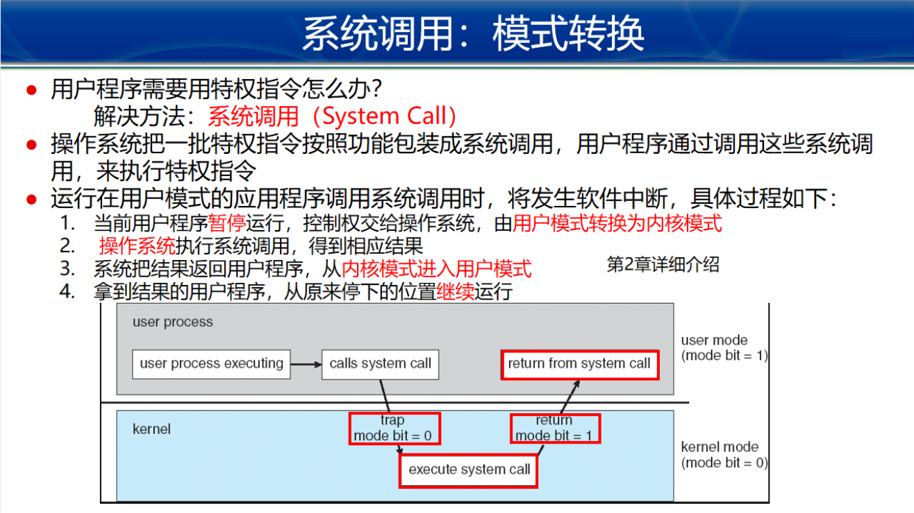
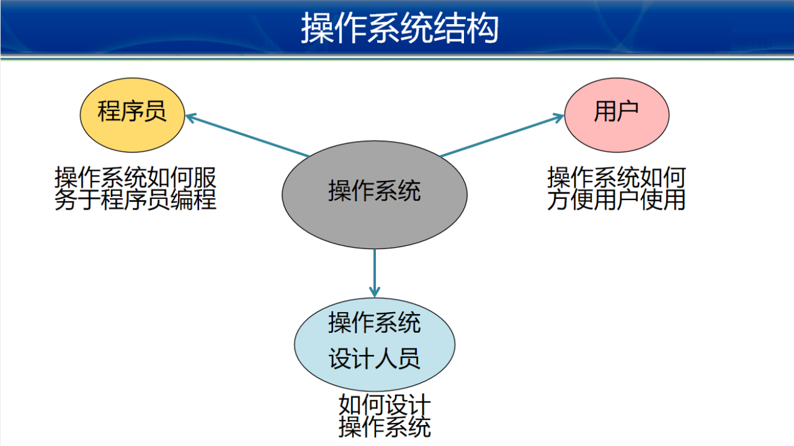
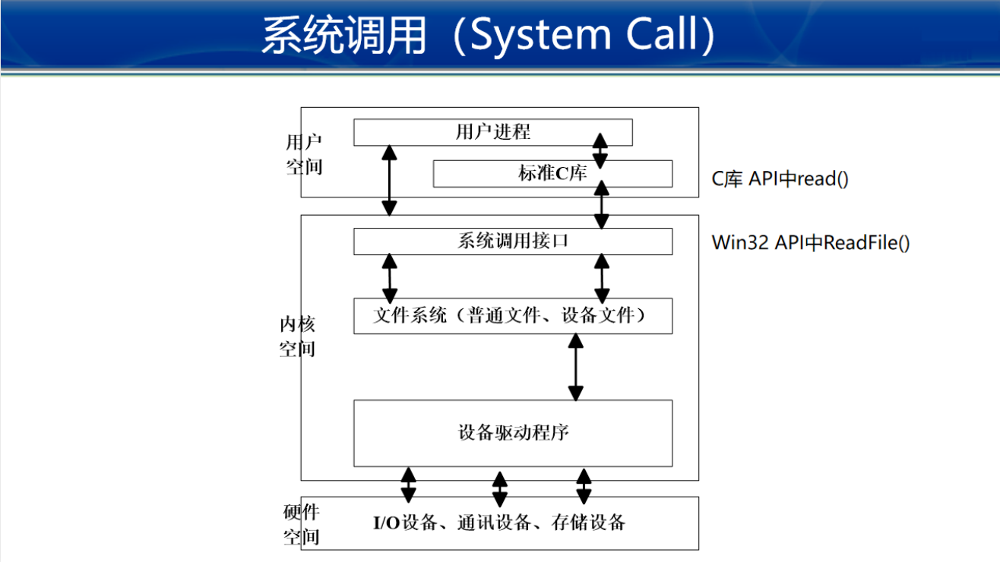
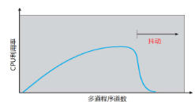
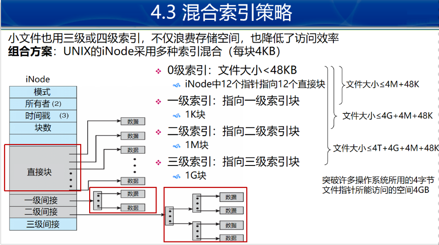

OS复习笔记
OS复习笔记
本来说是5部分，15章，但因为最后课时不够，只讲了13章
第一部分
一、概论
OS四大功能：
进程管理
内存管理
文件管理
I/O管理
双模式，系统调用及返回过程

二、操作系统结构
操作系统的结构图示：

三种常用API（系统调用即api)：
API调用：

API和系统调用（重要）
- 应用程序调用系统调用open时，CPU从用户态转为内核态
- cpu从系统调用表中寻找open的标号i
- 从向量表中找到系统调用i的入口地址执行标号i的系统调用操作
- cpu从内核模式返回用户模式，将得到的运行结果返回给应用程序
操作系统四个主要结构
第二部分：进程操作
三、进程
进程概念：
操作系统cpu调度和资源分配的基本单位
PCB进程控制块
- 为管理进程，系统为每个进程设置一个数据结构：进程控制块，包括
- 进程状态
- 进程号
- 程序计数器
- cpu寄存器信息
- cpu调度信息
- pcb与进程一一对应，系统通过管理pcb来管理进程
1.5 进程切换
进程上下文切换，需要pcb保存和恢复现场
- 进程p0正在cpu上运行
- 中断或系统调用，需要切换至p1
- 保存p0信息至现场
- 从pcb1恢复p1信息至现场
- 运行进程p1
- 遇到中断，保存p1信息至pcb1，从pcb0恢复p0信息
- 继续运行进程p0
2.1 进程创建
地址空间：
- 子进程复制父进程的地址空间，具有和父进程相同的程序和数据
- 子进程加载另一个新程序
举例：
- fork系统调用，创建子进程，完全复制父进程的空间，方边父子进程间通信
- fork后，可以调用 exec系统调用，用新程序覆盖进程的地址空间
进程创建是原子操作：
- 原子操作必须硬件支持
程序与进程的关系
- 进程时程序的一个实例，是程序的一次执行
- 一个程序可以对应一个或者多个进程
- 一个进程可以对应一个或者多个程序
- 程序是进程的代码部分
- 进程是活动实体，程序是精致实体
- 进程在–， 程序在–
进程的五个状态：
新建，运行，阻塞，终止，就绪
2.4 linux进程创建和终止
fork使用过程：
- 父进程执行fork系统调用，进入内核空间
- 内核从父进程复制出子进程，父进程和子进程pcb信息基本相同，用户态代码和数据也相同。父子进程都在等待从内核返回（调用fork一次，返回两次）。父子进程谁能先返回运行，取决于内核调度算法
- fork在父进程返回所建立的子进程id
- fork在子进程中返回值为0
- 父子进程交替抢占运行，顺序取决于内核调度算法
fork执行图要绘画：
2.6 等待
定义：父进程阻塞，直到子进程完成任务
实现：调用wait或者waitpid系统调用
- 进程一旦调用了wait函数，将立即阻塞自己，由wait自动分析是否当前进程的某个子进程已经退出
- 如果他找到一个已经变成僵尸的子进程，wait就会收集这个子进程的信息，并把他彻底销毁后返回子进程的pid
- 如果没有找到这样一个子进程，wait就会一直阻塞，知道有一个出现为止
僵尸进程：父进程没有使用wait等待子进程终止，子进程会变成无父进程清理的僵尸进程
孤儿进程：父进程比子进程先终止，子进程就会变成孤儿进程
init是所有进程的父进程，接管僵尸进程、孤儿进程
3.进程通信
几种通信方式：
- 共享内存
- 消息传递
- 同步
3.1 进程间通信（ipc）概念
独立进程：不会影响其他进程
协同进程：可能会影响其他进程
进程协同的优点：信息共享，加速运算，模块化 ，方便
ipc两种基本模式：
共享内存
速度快
消息传递
用于较少的数据量
3.4 同步
- 阻塞-同步:
- 阻塞发送：发送进程阻塞，直到消息被接受
- 阻塞接受：接收者进程阻塞，直到有消息可用
- 非阻塞-异步:
- 非阻塞发送：发送进程发送消息并继续操作
- 非阻塞接受：接收进程收到一个有效消息或无效消息
四、线程
概述：
- 动机
- 线程概念
- 线程与进程
- 线程结构
- 线程优点
- 线程实例
- windows
- linux
1.3 线程与进程
1.5 线程优点
- 响应度高
- 资源共享
- 经济型：切换快，代价小
- 可伸缩性
2.2 并发与并行
- 并发性：同一时间片内同时执行多个任务
- 并行性：同一时间点同时执行多个任务
- 数据并行
- 任务并行
2.3 Amdahl定律（重要）
即为所使用的时间之比的倒数，即为速度之比。因为对于相同的作业，时间和速度成反比
$$
S:应用程序的串行部分( % ) \
N:系统的计算核数量\
加速比\leq\frac{1}{S+\frac{1-S}{N}}
$$
3.3 多线程模型
- 多对一
- 一对一
- 多对多
4.线程库
- Pthread线程库
- JAVA线程库
- Win32线程库
5 隐式多线程
三种隐式多线程：
- 线程池
- OpenMP
- 大中央调度
JVM:
jvm隐藏了底层操作系统实现的细节，提供一个一致的，抽象的环境，允许java程序能够运行在任何jvm的平台上
jvm没有规定java线程如何映射到底层操作系统，而是让jvm的特定实现来据欸的那个
在java线程库和宿主操作系统线程库之间，也存在联系
五、cpu调度
cpu调度
分类：
- 长程调度
- 中程调度（本质上属于内存管理，不属于进程管理，将在后面详细讲”交换“）
- 短程调度
1.1 长程调度
收到道（Degree）数的限制，不是每个用户创建的进程都能马上装入内存运行
长程调度即是new->ready的这一过程：
- 每个用户的创建进程的初始状态是”新建“，处于新建状态的进程一般首先被放在外存的进程池中
- 当内存中的进程数量没有达到最多进程数时，操作系统的调度进程将新建状态选择一个进入内存并转换为就绪状态
1.1 短程调度
ready->running
长程调度和短程调度的比较
| 调度模式 | 切换频率 | 切换开销 | 必要性 |
|---|---|---|---|
| 短程调度 | 高，快 | 小 | 必须 |
| 长程调度高 | 低，慢 | 大 | 可选 |
- 进程生命周期中只有一次长程调度，但可以有无数次短程调度
- 长程调度需要将代码和数据从外存调到内存中，I/O极其耗时
1.2 调度队列
就绪队列：在主内存中处于就绪状态并等待的执行的进程集合
设备队列：等待某I/O设备的进程队列
队列的执行过程实际上就是进程在各种队列之间转移的过程
1.3 调度过程
CPU调度由调度程序和分派程序完成
调度进程：根据某种策略选择内存中的一个就绪进程
分派程序：负责具体的进程切换工作
具体过程：应该不用记住
- 利用定时器把cpu的控制权转交给cpu调度程序，让调度程序选择一个需要运行的进程
1.3 调度方式
- 非抢占式调度：
- 优点：易实现，开销小，适合批处理系统
- 缺点：响应时间长，不适合交互式系统
- 抢占式调度：
- 优点：可以防止单一进程长时间独占cpu
- 缺点：开销大
他们的区别在于：运行进程是否愿意自愿放弃cpu
1.4 CPU调度时机
非抢占式（主动放弃cpu）：
- runnin->terminated
- running ->waiting
抢占式：
- running->ready
- waiting ->ready(I/O或者事件完成)
cpu三个时间-计算题-gant图（重要）
三个时间：
- 等待时间：程序来到内存的全部等待时间（周转时间-等待时间=程序运行总时间）
- 响应时间：程序来到内存到第一次运行的时间
- 周转时间：程序来到内存到运行结束的时间
CPU区间时间：即一个进程所需要运行的时间
几种算法：
FCFS（first come first serve）
顾名思义
SJF(shortest job first)
分两种模式：
- 非抢占式调度：
- 抢占式调度：抢占式比非抢占式有更小的等待时间和响应时间
优点：有最短平均等待时间
缺点：饥饿问题
PR 优先级调度算法
- 调度策略：基于进程的紧迫程度为每个进程分配优先级，默认小的优先。对于相同的优先级的进程，按照FCFS原则。
- 调度模式：
- 非抢占式
- 抢占式
- 优缺点：
- 优点
- 实现简单
- 考虑了进程的紧迫程度
- 策略灵活，可以模拟其他算法
- 存在问题：
- 饥饿
- 解决办法：
- 老化
- 优点
RR 时间片轮转算法
专为分时系统设计，类似FCFS，但增加了抢占
- 原理：分割时间片
- 调度：
- 调度时，将就绪队列作为循环队列，为每个进程分配不超过一个时间片的CPU，用完后，进程进入就绪队列尾部等待，等待循环执行
- n个进程，时间片为q，任何一个进程等待时间不超过（n-1）*q
- 每个进程获得不超过时间片的运行时间
- 时间片大小设置：
- 时间片过大，等同于FCFS
- 时间片过小，相当于共享处理器，会增加上下文切换时间
- 时间片对于切换上下文时间而言必须足够长，否则导致系统开销大
- 一般准则：时间片/10>进程上下文切换时间
MLQ 多级队列调度
- 以上算法的局限性：
- sjf有利于短进程不利于长进程
- rr系统开销大
- 优先级算法存在饥饿
- 不同类型的进程采用相同的策略
- 交互进程需要短时间相应
- 批处理进程需要短的等待时间
- 多级队列调度：
- 针对不同进程使用不同的调度算法，解决进程类型多样化的维妮塔
- 实现方法：系统种存在多种就绪队列，每个队列有自己的调度算法
- 要素
- 需确定就绪队列的数量
- 需确定每一队列的调度算法
- 需确定新进程将进入哪一个队列
- 例子：windows
- 前台交互式队列 RR
- 后台批处理系统 FCFS
- 交互进程需要短时间相应，批处理进程需要短的等待时间
- cpu空闲，应先调度哪个队列的进程：
- 固定优先级：可能饥饿
- 给定时间片：每个队列得到一定比例的CPU，80%前台（RR），20%后台批处理（FCFS）
- 以上算法的局限性：
MLFQ 多级反馈队列调度
- 是MFQ的改进，不同在于，进程运行过程中能在不同队列间移动
- 需要考虑以下问题：
- 需确定就绪队列的数量
- 需确定每一队列的调度算法
- 需确定新进程将进入哪一个队列
- 决定进程升级的方法
- 决定进程降级的方法
- 优点：很好地解决了CPU使用问题，目前os大多使用MLFQ的变种
- 注意点：
- 可能只有降级方法，没有升级方法
- 每个队列使用的调度算法可以相同
多处理器调度（了解）
手机多处理器，电脑多处理器
对称多处理器 SMP
非对称多处理器 ASMP
问题：
- 亲和性
调度算法：
单队列多核调度方法
- 优点：实现简单，负载均衡
- 缺点：
- 不具有亲和性，一个进程可能在不同时候被调度到不同的cpu，导致多个cpu的cache中都有同一个进程的数据
- 多核同时访问队列，会有加锁问题，严重影响调度性能
多队列调度方法
- 优点：
- 亲和性好
- 不需要加锁
- 缺点：
- 负载不均衡
- 解决策略：偷进程
- 负载较低的cpu会定时“偷看“其他就绪队列的进程是否比自己满，若是则选择性地偷几个进程过来，以保持负载均衡
- 优点：
调度算法：
实时os概念（了解）
六、同步（重要）
生产者&消费者
1.1 背景
数据的不一致性例子：有界缓冲
n个缓冲区的有界缓冲问题
- 增加变量counter，初始化为0
- 向缓冲区增加一项是，counter加1
- 从缓冲区移去一项，counter减1
1.2 竞争条件
- 竞争条件：多个进程并发访问同一共享数据的过程
- 共享数据的最终结果却决于：最后一个进程的操作
- 防止竞争条件方法：
- 并发进程同步
- 进程互斥
1.3 同步与互斥
同步（了解）：
协调进程的执行层次序，是并发进程能有效共享资源和相互合作，保证数据一致性
协调执行次序
互斥（重要）：
概念：
- 进程排他性地运行某段代码，任何时候之恩那个有一个进程能够运行
- 互斥访问独占资源
临界条件：
- 一次只允许一个进程使用的资源
- 互斥资源、独占资源或共享变量
- 许多物理设备都属于临界资源，如输入机、打印机以及磁带机，还有上述例子的counter
共享资源：
- 一次允许多个进程访问的资源
临界区：
- 涉及临界资源的代码段，临界区的设定方法有程序员确定
- 是进程内的 代码，每个进程可能有多个临界区
- 没有两个进程能在他们的临界区内同时执行
- 若能保证诸线程互斥进入相关联的临界区，可以实现对临界资源的互斥访问
1 | do{ |
- 临界区使用准则：
- 互斥：
- 假定进程pi在某个临界区执行，其他进程都被排斥在该临界区歪
- 有相同临界资源的临界区都需互斥
- 没有临界资源的临界区不需互斥
- 有空让进
- 临界区内无进程执行，不能无期限的延长下一个要进入临界区的进程的等待时间
- 有限等待
- 每个进程进入临界区前的等待时间必须有限
- 不能无限等待
- 访问临界区过程：
- 在进入区实现互斥原则
- 在退出区实现有空让进原则
- 每个临界区不能过大，从而实现有限等待准则
- 互斥：
2.1 信号量概念
- 早期
- 硬件解决办法
- 信号量-软件解决方案
- 保证两个或多个代码段不被并发调用
- 在进入关键代码段前，进程必须获取一个信号量，否则不能运行
2.2 整型信号量
- 信号量S是一个整型变量
- S>0表示可以获得信号量
- S<0表示无法获得信号量
- 提供两个原子操作访问信号量
- wait又称p操作，表示要获得一个信号量
- S>0,进程可以获得一个S信号量，继续运行
- S<=0,进程无法获得一个信号量，无法继续运行
- wait又称p操作，表示要获得一个信号量
- 整型信号量的问题：忙等
- S《=则进程将不断执行while语句，占用CPU
- 解决方法：记录型信号量
2.3 记录型信号量
- 去除忙等的信号量
- 增加一个等待队列，当一个进程无法获得信号量时，马上释放CPU并把自己转换为等待状态，加入该信号的等待队列
- 整型信号量先判断再减一，记录型信号量先把信号量的值减一再判断，目的是为了知道由于申请该信号量而阻塞的进程数。
- S<0时，|S|表示等待队列中被阻塞的进程数
信号量类型
- 计数型信号量
- 变化范围：没有限制的整型值
- 一般初值为0，上一步的进程完成后置1，下一步的进程才能继续进行，因此叫同步信号量
- 计数信号量=同步信号量
- 二值信号量
- 变化范围仅限于0和1
- 一般初始值为1，同时只允许一个进程执行某个动作，等一个程序执行完之后才能允许另一个执行，因此叫做互斥信号量
- 二值信号量=互斥信号量
- 信号量S的使用（重要）
- S必须置一次且只能置一次初值
- S初值不能为负数
- 除了初始化，只能通过执行P（wait）、V（signal）操作来访问S
2.4 同步信号量和互斥信号量的使用
如上面描述
经典同步问题×3
- 生产者-消费者问题
- 共享有限缓冲区
- 读者写者问题
- 数据读写操作
- 哲学家就餐问题（不考）
- 资源竞争
3 生产者消费者问题
- 问题描述
- 生产者：生产产品，放入缓冲区
- 消费者：从缓冲区取产品消费
- 问题：如何实现生产者和消费者间同步与互斥
4 读者写者问题
- 问题描述：
- 两组并发进程
- 读者和写者
- 共享一组数据区进行读写
- 要求
- 允许多个读者同时读
- 不允许多个写者同时写
- 不允许读者和写者同时读写
- 例子：对文件的读写操作
- 两组并发进程
- 第一类读者写者问题：写者优先：
- 读者：
- 无读者、写者，新读者可以读
- 有写者等，但有其他读者在读，则新读者也可以读
- 有写者写，新读者等
- 写者：
- 无读者和写者，新写者写
- 有读者，新写者等待
- 有写者，新写者等待
- 读者：
4.3 解决方案
增加一个互斥信号量M，设置初始值为1
1 | Readers |
5.3 信号量总结
- 信号量S的物理含义：
- S>0:有S个资源可以用
- S=0:无资源可用
- S<0:则|S|表示S等待队列的进程个数
- 理解wait和signal两个原子操作
- wait（S）或P（S）表示申请一个资源
- signal（S）或V（S）表示释放一个资源
- 信号量的初值
- 使用中注意的问题
- PV成对出现
- 互斥操作：pv处于一个进程内
- 同步操作，pv不在一个进程内
- 两个一样的P操作的顺序至关重要
- 同步与互斥P操作一起是，同步P操作要在互斥P操作之前
- 两个v操作次序无关紧要
- PV成对出现
七、死锁
1.1 死锁概念
- 死锁定义：多道程序环境下，一组处于等待状态的进程，其中每一个进程都持有资源，并且等待着由这个组中其他进程所持有的自由。如果该组等待有可能再也无法改变其状态，这种情况称为死锁。
- 所有死锁进程如果没有外力介入，都无法往前推动
- 引起死锁的主要原因：
- 竞争互斥资源
- 进程推进不当
- 例如
1.2 死锁必要条件（重要）
- 互斥
- 占有并等待
- 非抢占
- 循环等待
1.4 资源分配图
- 集合P、R和E
- 边：
- 由资源实例指向进程，表示该资源被该进程使用
- 由进程指向资源集合，则表示该进程请求一个该资源实例
- 资源实例
- 进程状态
- 如果没有环，就没有进程死锁
- 如果有环，可能存在死锁
- 如果每个资源类型只有一个实例，就环就意味着有死锁
2 死锁预防（了解）
概念：
防止死锁的四条件之一发生即可
死锁预防方法：
- 互斥，通过对互斥访问
- 占有并等待：
- 非抢占：如果一个进程没有是实现，他要释放所有占有的资源
- 循环等待：对所有的资源类型进行总排序，并且要求进程按照递增顺序申请资源
3 死锁避免
- 安全状态
- 资源分配图法-单实例资源
- 银行家算法-多实例资源
3.1 安全状态
- 安全状态和死锁状态的关系
- 安全状态不是死锁状态，死锁状态是不安全状态
- 不是所有非安全状态都能导致死锁状态
- 死锁避免，即确保系统永远不会进入不安全状态
3.2 资源分配图法
若每种资源都只有一个实例，
有环存在说明会使系统处于不安全状态，该进程的资源申请必须等待
原理就是：添加一条边，看会不会形成环，如果会则说明可能会导致进入不安全状态，避免进入不安全状态就是死锁避免
3.3 银行家算法（了解）
- 几个数组：
- Available:长度为m的向量，如果available[j]=k，那么资源Rj由k个实例有效
- Max:n×m矩阵，如果Max[i,j]=k，那么进程Pi最多可以请求k个资源Rj的实例
- Allocation:n×m矩阵
- Need:
- 安全算法
- 资源请求算法
4.1 死锁检测（重要）
单实例资源
死锁检测：多实例资源
死锁检测算法：
几个数组：
- Avaiable:长度为m，表示每一种资源类型可用的实例数量
- Allocation：n×m矩阵，表示每个进程每种资源的当前分配量
- Request：n×m矩阵，表示当前进程请求。如果Resquest[i,j]=k,那么进程Pi请求资源Rj的k个实例
检测算法：
令Work Finish分别为长度为m和n的向量，
初始化work=Avaiable
查找i满足：finish[i]==false，Request[i]<=Work。
若找不到，到第四步
Work=Work+Allocation[i]
Finish[i]=true
返回第二步
若对某个i，Finish[i]=false。则判断系统死锁，否则没有死锁。
4.2 死锁恢复（了解）
第三部分：内存管理
八、内存管理
1.1 基本硬件
- 合法地址空间
- 通过两个寄存器
- 基址寄存器：进程最小的合法物理内存地址
- 界限寄存器：进程地址的长度
- CPU在执行指令的时候，要验证地址的合法性
- base<=合法地址<=base+limit
1.2 地址绑定（重定位）
在程序装入内存中使，把程序的相对地址转换为内存中的绝对地址的过程，指令和数据绑定到内存地址可在三个不同的阶段:
- 编译时：如果开始位置改变，需要重新编译代码
- 加载时：如果存储位置在编译时不知道，则 编译器生成可重定向代码，绑定延迟到加载时
- 执行时：如果进程执行时可以在内存中移动，则地址绑定延迟到运行时，需要硬件的支持，大多数os都支持
1.3 逻辑地址和物理地址
- 从逻辑地址到物理地址这一概念至关重要，是正确进行内存管理的中心
- 从逻辑地址到物理地址的转换由MMU完成
- 可以看成是基址寄存器的推广，这里成为重定向寄存器，每次逻辑地址都要加上重定向寄存器的值才能得到物理地址的值。
- 将用户与物理地址隔离开来
2 连续内存分配
- 单一连续分配
- 固定分区分配
- 可变分区分配
- 碎片
2.3 可变分区分配
选择一个空闲孔的方法：
- 首次适应：首次遇到的符合要求的分区
- 最佳适应：最小的符合要求的分区
- 最差适应：最大的分区
2.4 碎片
- 外碎片：除了内碎片应该都是外碎片
- 内碎片：使用固定分区分配时得到的碎片成为内碎片（应该是无法解决）
- 可以通过紧缩来减少碎片
- 只用重定向是动态的时候，才有可能进行紧缩，紧缩仅在运行时执行（前面动态重定向的作用来了）
3 分页内存存储（为了解决外碎片）
3.1 基本方法
分页允许进程物理地址空间不连续，只要有可用的物理内存，就可以分给进程
把物理内存分成大小固定的块，称为帧，或者页框
逻辑内存也分为同样大小的块，称为页
- 现在通常为4k-64k
系统保留所有空闲帧的记录，运行一个有N页大小程序需要找到N个空闲帧来装入程序，运行进程时，查找页表，实现逻辑地址到物理地址的转换。
早期由硬件实现，最新的设计时硬件和操作系统配合实现，如64位处理器
优点：不会有外碎片，因为每个 帧都可以分给进程
缺点：会有内碎片
空闲帧表
操作系统通过空闲帧表管理物理内存中的空闲帧
- 线性地址——页表
| 页号 | 页偏移 |
|---|---|
| p | d |
| m-n位 | n位（$2^nB=一页的大B，如2^{12}=4KB,4KB页表的页偏移为12位$） |
利用页表进行逻辑地址到物理地址的转换！
3.2 硬件实现（TLB快表（可实现并行查找，同时与所有键比较））
带TLB的分页硬件查找进行逻辑地址到物理地址的转换图。这个应该不难，但一方遗忘再写一遍
- CPU产生逻辑地址后，将页号p发送给TLB
- 若在TLB中找到页号，则命中可得到帧号，frame，访问内存
- 若未命中，则访问页表得到帧号，然后访问内存，
- 同时页号和帧号添加到TLB
TLB命中率计算
页号在TLB中查找到的百分比称为命中率
评价指标：有效访问时间：EAT
$$
假设查找TLB需要时间a，内存一次存取时间为b，命中率为\lambda\
EAT=\lambda(a+b)+(1-\lambda)(a+2b)
$$
例题：如果TLB需要20ns，访问内存需要100ns，分别在命中率为80%和98%的情况下，计算EAT
- 命中率为80%，EAT=0.8 * 120+0.2 * 220=140ns
- 命中率为98%，EAT=122ns
3.3 内存保护方法（了解）
- 简单方法：把页号和页表限长寄存器值相比较
- 细致方法：通过每个帧相关联的保护位来实现
- 可用一个位来定义页是否只读，读写，只执行
- 有效-无效位
- 有效:相关的页在进程的逻辑地址空间，且是合法的页
- 无效:页不在进程的逻辑地址空间内
3.4 共享页 （了解）
4 页表结构
- 层次页表
- hash页表（了解）
- 反向页表（了解）
- linux分页机制
（通常一个页表项占4字节）
4.1 层次页表（挺重要的）
- 层次页表的思想：将页表划分为更小的部分
- 两级页表就是页表再分页
- 例子：一个两级32位的页表系统
| 一级页表 | 二级页表 | 页偏移 |
|---|---|---|
| 10位 | 10位 | 12位（一页的大小为$2^12=4KB$） |
- 对于64位系统，可以采用更多的三级页表
4.2 hash页表
应该就是把逻辑页号hash之后再去到页表里面取
缺点是：每个页表可能有多个页表项，这些页表项可能占用大量内存
4.4 Linux分页机制（概念）
5 分段内存管理（了解）
我没怎么看，10秒钟过了一遍
6 内存”扩充“技术
- 覆盖技术
- 交换技术
- 虚拟内存（下一章讲解）
6.1覆盖技术
- 程序执行时，只在内存里保留需要用到的指令和数据
- 主要由程序员声明覆盖结构
- 优点：不需要os的特别支持
- 缺点：复杂
6.2 交换技术
- 备份区：
- 一个固定的足够大的可以容纳所有用户内存拷贝镜像的快速磁盘
- 必须提供对这块磁盘的快速访问
- 例如：某系统采用时间片轮转算法
- 当时间片用完之后，内存管理将刚执行完的进程换出，将另一个进程换入刚刚释放的内存空间
- 换入换出：
- 交换可采用基于优先级的算法，低优先级的进程被换出，高优先级的进程被换入
- 交换较为耗时：
- 100MB需要4s
- 标准交换技术较为少见，但大多是他的变形
- unix之后在内存不够的时候进行交换
- 安卓不支持交换
九、虚拟内存
- 虚拟内存技术
- 请求调页
- 页面置换
- 帧分配和帧抖动
- 内核内存分配
- 虚拟内存其他考虑
1 虚拟存储技术
- 第八章内存管理策略的前提，代码必须装入内存才能执行，即将整个程序装入内存，限制程序大小必须小于物理内存大小
- 但这是不合理的
- 局部性原理：一个程序只要部分装入内存就可以运行
1.2 概念
- 虚拟内存技术：进程运行时，将一部分装入内存，一部分暂留在磁盘中，当要执行的指令或者使用的数据不在内存中时，由操作系统将他们调入内存执行。
- 虚拟地址空间：分配给进程的虚拟内存
- 虚拟地址：在虚拟内存中的指令或者数据的位置，该位置可以被访问
- 虚拟内存：将内存和磁盘有机结合起来，形成一个容量很大的”内存“，即虚存
- 虚拟内存是内存的抽象，构建在存储体系之上，由操作系统协调各个存储器的使用
1.3 写时复制
- 允许父进程和子进程在初始化时共享页面，只有当某个进程修改时，才会产生副本
- 如果其中一个进程修改了共享页面，才会产生副本
- 实现快速进程创建，最小化创建进程时必须分配的新页面数，更加高效
- 如Linux下的fork（）
1.4 虚拟内存的实现
- 虚拟页式存储：虚拟存储技术+页式存储结构
- 虚拟段式存储：虚拟存储技术+段式存储结构
- 现代操作系统通常采用虚拟页式存储技术
- 虚拟页式存储有两种方式
- 请求调页
- 预调页
2 请求调页
2.1 基本思想
- 基本思想：请求调页（按需调页），只有在一个页需要时才把他调入内存
- 请求调页类似交换技术，但是粒度不同
- 进程驻留在磁盘上，只有当需要运行时，将他调入内存，不是将整个进程调入内存
- 懒惰交换技术：只有在需要页时，才把他调入内存，实际为调页程序
- 交换技术：对整个进程进行操作
- 调页进程：只是对进程单个页进行操作
2.2 有效-无效位
- 区分哪些页在内存上，哪些不在
- v（1）表示在内存上，i（0）表示不在内存上
2.3 缺页中断
处理缺页中断步骤：
- 当CPU访问指令或查找数据时，查找对应表项，发现有效-无效位为i
- 检查进程内部表，该表通常和PCB一起保存，确定引用是合法还是非法的地址访问：
- 引用非法：终止进程
- 合法：执行页面操作
- 从内部表找到所需页面在磁盘中位置
- 找到一个空闲帧，把这个页放进去
- 磁盘操作完成后，修改进程的内部表和页表，把有效位设为v，表示该页已经在内存
- 重启指令，进程能够访问内存所有页
2.5 请求调页性能
使用有效访问时间（EAT）来表示
$$
p为缺页率：\
EAT=(1-p)\times 内存访问时间+p\times 页错误访问时间
$$
请求调页性能优化
- 降低缺页率（最主要）
- 交换空间的处理和利用
有的os使用二进制文件。。。。。
3 页面置换
3.1 基本思想
没有空闲帧的解决办法：
- 终止进程
- 交换进程
- 页面置换、页置换、页淘汰
页面置换方法
- 如果没有空闲帧，就查找当前内存没有用的帧，将其移出内存，换出时，将其内容写到交换空间，并修改页表以表示该页不再内存中
页面置换缺页处理程序（即为上面[缺页中断](#2.3 缺页中断)后四步的改进）
从内部表找到所需页面在磁盘中位置
找到一个空闲帧，把这个页放进去
- 如果有空闲帧，就是用它
- 如果没有空闲帧，使用页面置换算法，选择一个”牺牲帧“
- 将牺牲帧的内容写到磁盘上，更新页表和空闲帧表
磁盘操作完成后，修改进程的内部表和页表，把有效位设为v，表示该页已经在内存
重启指令（用户程序），进程能够访问内存所有页
改进讨论：
- 使用修改位或脏位来减少页面转移次数
- 页面置换完善了逻辑内存和物理内存的划分，让程序员可以在小的物理内存上使用一个大的虚拟内存
3.2 页面置换算法
就只靠下面这三个
- FIFO(First In First Out)
- OPT()
- LRU(least recently Used)
- 置换内存中最长时间没有使用的页
4 帧分配和抖动
4.3 系统抖动（颠簸）
抖动：一个进程页面经常换入换出
这种高强度的页面调度活动称为抖动，也成为颠簸，会导致严重的恶性循环：
- CPU利用率低下
- 操作系统认为需要增加多道程序的道数
- 系统中将加入一个新的程序
- 新程序试图同从其他程序拿到帧
- 引发更多缺页
- 甚至系统崩溃

4.4 工作集模型
- 局部假设，提出工作集模型
- 工作集是程序局部的近似
5 内核内存系统（记住）
- 伙伴系统
- slab系统
第四部分：存储管理
十、文件系统接口
- 文件系统
- 对于用户：文件系统是操作系统最明显的部分
- 作用：对操作系统和所有用户的数据和程序进行在线存储和访问
- 两大 组成部分：
- 文件集合，每个文件存储相关信息
- 目录结构，用于组织系统内的所有文件并提供文件信息
1 文件系统
1.1 文件概念
- 计算机在各种存储介质上存储信息，为方便使用，操作系统提供了信息存储的统一逻辑视图
- 文件：
- 操作系统对存储设别的物理属性加以抽象，从而定义逻辑存储单位，即文件
- 计算机中信息存储的基本组织形式
- 文件时逻辑外村你的最小分配单位，即数据只有通过文件才能写到外存
- 文件为位、字节、行或记录的序列，包括程序文件或数据文件
- 文件记录在外存上的相关信息的命名组合，有操作系统映射到物理设备上
- 文件名：
- 用户通过文件名访问文件
- 按名存取
- 命名规则：大小写敏感，最多可以输入255个字符
1.2 文件结构
- 无结构：字节流等
- 简单记录结构：
- 复杂结构：格式化文档，多媒体文件等
1.3 文件类型
- 文件类型一般由拓展名决定
1.4 文件属性
- 文件名
- 标识符
- 位置
- 类型
- 大小
- 保护：chmod 777？761？
- 时间、日期和用户标识
- 拓展属性：字符编码、安全功能（校验和）
1.5 文件操作
6个基本文件操作组成文件操作的最小集合
| 操作名 | 操作作用 |
|---|---|
| 创建文件 | 创建一个新文件 |
| 写文件 | 写入文件 |
| 读文件 | 读取这个文件 |
| 重新定位文件 | 重新搜索目录以寻找适当的条目，并将当前文件位置指针重新定位到给定值 |
| 删除文件 | 在目录中搜索给定文件，释放其文件空间，并删除目录条目 |
| 截断文件 | 删除文件的内容，释放其文件空间，但保留他的属性 |
其他操作：重命名（创建+写文件）；附加新信息（读文件+写入）；创建文件副本（创建文件+写文件）
- 每个打开的文件具有以下关联信息：
- 打开文件表：跟踪打开的文件，避免重复搜索目录
- 首次使用文件时系统调用open（），根据文件名搜索目录，将目录条目复制到打开文件表，同时附带模式信息。返回一个指针，指向打开文件表的对应条目。当请求文件操作时，可通过该表的索引指定文件，而无需再搜索。当文件最近不再使用时，进程系统调用delete，关闭文件。
- 文件指针
- 打开文件计数
- 文件存储位置
- 访问权限
- 打开文件表：跟踪打开的文件，避免重复搜索目录
- 优点:
- 方便文件共享
- 提高文件存取效率限
- 文件锁：
- 系统中多个进程可以修改胸痛日志
- 共享锁：类似读者锁
- 独占锁：类似写者锁
2 逻辑文件及其访问方式
- 顺序文件：顺序存下去，最节省空间，但访问耗时
- 直接文件：可以直接访问
- 索引文件：综合两者优点，索引表计算
3 文件目录
3.1 文件控制块和目录
目录：
- 包含着所有文件信息的节点集合，是根据文件名检索文件的桥梁
- 由目录项有序构成，一个目录的目录项组成了目录文件。每个目录项存放了一个文件的各类属性，包括存放地址等。每个目录项等长
- 在有些系统中：目录项=文件控制块
- 很多操作系统把目录组织成文件：目录文件
文件检索过程：文件名 -> 目录项 -> 文件存储位置
一些针对目录的操作只和目录有关，和文件本身无关：
如：创建文件操作，仅仅是为这个文件创建了一个目录项，系统并没有分配任何空间来存储内容
如：删除文件操作，仅仅是把该文件的目录项回收，并设置为空，不会将文件内容真正清空。
3.2 文件检索过程
- 文件检索是一个遍历目录项的过程，具体步骤：
- 根据文件所在目录，打开目录文件；
- 从磁盘读入该目录文件的1个物理块，该块包含若干个 目录项
- 根据文件名遍历内存中的该块，如找到则结束
- 判断该目录文件是否还有物理块没有读入，如果有则返回步骤2，如果没有则判断该目录中没有该文件
- 那么对于一个有n个目录项的文件：
- 平均遍历目录项数：（1+n）/2
- 不考虑文件查不到的情况，如果考虑遍历数会更大
- 目录项由于经常变化，一般不排序
- UNIX采用iNode方法降低目录项大小：
- 一个完整的目录项就是文件控制块，里面包含两大量的文件属性，如果不读入物馆的信息，降低目录项的大小，就可以提升文件访问的效率
- 分析发现，文件检索过程中用到的主要内容就是文件名
- UNIX为每个文件控制块建立一个索引项，内容为文件名和指向文件控制块的指针。类似于索引文件，称为iNode索引节点
- 目录文件中包含iNode索引节点，每个索引节点就是一个目录项
- 效果是能大幅减少查找文件时读入的物理块的数量
3.3 文件保护
chmod 761 file
| 类型 | 权限 | RWX |
|---|---|---|
| 所有者 | 7 | 111 |
| 组用户 | 6 | 110 |
| 公共用户 | 1 | 001 |
如果要打开一个目录，需要R和X权限。
4 目录结构
目录结构的设计目标
- 目标一：效率
- 快速定位文件位置
- 提高文件访问效率
- 目标二：命名
- 方便用户使用
- 同名的不同文件
- 不同名的相同文件
- 目标三：分组
- 文件分组：子目录
- 兼顾效率和方便性
4.3 树形目录
- 特点：
- 检所高效
- 可以分组，用户可以自由建立子目录
- 允许重名，不同子目录可以有同名文件
- 当前目录：当前工作目录
- 绝对目录：从跟开始的目录
- 绝对路径：从当前目录开始的路径
- 当前路径优点:提高检索效率
性能计算
每查一层目录，需要平均读入块数：
$$
(1+下一个目标文件（夹）所在目录的总项数)/2
$$
文件共享
- 两种共享文件的方式：
- 硬链接
- 多个iNode指向一个FCB
- 软连接/符号连接
- 生成一个连接文件（windows快捷方式）*
- 硬链接
- linux中建立链接命令： ln
- ln 源文件 目标文件
- ln -s 源文件 目标文件
十一、文件系统实现
1 文件系统
1.1文件系统结构
- 应用程序
- 逻辑文件模块
- 文件组织模块
- 基本文件模块
- I/O控制
- 设备
基本文件系统：
- 物理块读写
- 线设备驱动程序发送通用控制命令，控制设备控制器对存储设备进行读取操作
- 管理内存换种去和保护各种文件系统、目录和数据块的缓存
文件组织模块（本章重点）
- 管理文件、逻辑块和物理块
- 把文件的逻辑地址转换为物理地址
- 管理空闲空间
- 为文件分配物理块
逻辑文件系统（上章介绍）
- 管理文件系统中的元数据
- 处理文件内容外的所有结构数据
- 文件按名存取
- 管理文件目录结构
- 把文件名转换为文件ID，句柄
- 管理FCB
- 存储保护
1.3 磁盘文件系统
| MBR | 分区表 | 主分区 | 分区2 | 分区3 | 分区4 |
|---|
MBR：主引导记录，存储在磁盘的0柱面、0磁道、1扇区，存储主引导程序等信息，在计算机启动时运行
分区表：存储硬盘的分区信息
UFS：
| 引导块 | 超级块 | 空闲区表 | iNode | 根目录 | 文件 |
|---|
空闲区表：记录该分区中没有分块的物理块信息
FAT
| 引导区 | FAT1 | FAT2 | 根目录 | 文件 |
|---|
1.5 虚拟文件系统VFS
- 不同存储设备使用的文件系统可能不同
- 引入虚拟文件系统目的:
- 支持多个文件系统
- 把多个文件系统整合成一个目录结构
- 为用户屏蔽各个文件系统的差异
- 虚拟文件系统功能：
- 提供了一种面向对象的方式来实现文件系统
- 为不同类型的文件系统提供了接入VFS的接口
- 为用户提供了同意的系统调用接口
- 文件系统接口
- 统一的应用程序访问文件的接口
- 各个文件系统提供给应用系统的接口可能不同
- 为了解决接口不一致的问题，引入VFS接口
- 为各类不同的文件系统定义VFS接口
- 符合该接口的文件系统都可接入VFS
常见文件系统：
Windows：
- FAT
- NTFS
- ReFS
Linux：
- Ext系列
MacOS
- HFS
CD
- ISO 9660CDFS
2 连续分配
2.1 物理块和逻辑块
物理块是读写存储设备的基本单位：
- 文件读写时，以块为单位进行读写
- 好处：减少读写次数，提高访问效率
物理块也是存储设备的基本分配单位：
- 以物理块为单位为文件分配存储空间
物理块大小和内存大小相对应
- 例如：页面大小：4KB；物理块大小:4KB的倍数
逻辑块：在文件空间中的块，类似于程序空间中的块
- 每个文件按照固定大小分成若干逻辑块，大小和物理块一致
- 每个逻辑块存储在一个物理块中
2.2 存储空间分配方式
- 存储空间分配方式：
- 连续分配，连续
- 链接分配，离散
- 索引分配，离散
- 连续存储空空间分配：是指一个文件在磁盘上存储在连续的物理块中
- 离散存储空间分配：一个文件的物理块课用分布在磁盘的各处
2.3 连续分配
每个文件只需要给出初始块号和长度
2.4 性能分析
- 连续分配优点:
- 支持随机访问（可直接访问指定块号的物理块）
- 存取速度快（相邻存放，上一个块到下一个块移动距离短）
- 适用一次性写入操作
- 缺点：
- 浪费空间（小空间无法分配（碎片））
- 文件不能动态增长
- 不利于文件的插入和删除（需要移动数据）
2.5 连续分配的改进（重点）
- 连续分配的改进：
- 基于扩展的文件系统（局部连续模式）
- 改进的连续分配方案
- 最初分配一块连续空间，不足时，添加另一块连续空间，即扩展
- 扩展是一组连续的磁盘块集合
- 扩展在文件分配时被分配
- 一个文件可能包含一个或多个拓展
- 需要一个指向下一个拓展的指针
- 文件块记录为：地址、块数、下一拓展的首块的指针，（后面的形成链表）
3 链接分配
- 两种链接分配的方式：
- 隐式链接
- 显式链接
- 如：FAT
3.1 隐式链接
优点：
- 可以离散存放，提高磁盘的利用率
- 可以动态扩充文件大小
- 便于文件的插入和删除操作
缺点：
- 无法实现随机访问，访问文件慢
- 可靠性差
优化方法：
- 多块集合成组，基于扩展的文件系统
例题：一个文件大小为5MB，采用隐式链接，每个物理块大小为1KB，块中指针大小为4B，那么该文件需要的物理块数量：（5141）
3.2 显式链接
- 把每个物理块中的指针存放在一张连接表中，减少放入的物理块量
- 先访问链接表，再访问物理块
- 大大提高检索速度
3.3 显示链接例子：FAT32（重要）
- 两份FAT表，防止数据破坏
- 每个簇（物理块）固定为4KB~32KB
- FAT表的表项占据32位
- FAT表最大表项数2^32项
- 单个文件不能超过4G（2^32=4G）
- 通常FAT32管理的单个最大磁盘空间512B*2^32=2TB
4 索引分配
- 索引分配 }两种连接分配的方式
- 多级索引分配 }
- 混合索引分配
4.1 索引分配
- 隐式链接的问题：
- 指向下一个块的指针分散存放，访问性能低下
- 解决办法：分散的FAT
- 索引块：为每个文件建一张文件分配表，即为索引分配
4.3 混合索引策略
小文件使用三级或者四级索引，不仅浪费存储空间，也降低了访问效率
组合方案：UNIX的iNode采用多种索引混合（每块4KB）

5 空闲空间管理
- 空闲空间管理办法
- 空闲表
- 空闲链表
- 位示图
- 成组链接
- 一致性检查
- 空闲空间整理
十二、大容量存储器结构
- 磁盘结构和管理
- 磁盘调度和RAID(RAID不考)
1 磁盘结构和管理
1.2 地址映射管理
磁盘地址CHS计算：
- 注意一个扇片有两个扇面
- SPT：每个磁道最大扇区数
- HPC：最大磁头数
$$
LBA=c\cdot HPC\cdot SPT+h\cdot SPT+(s-1)
$$
1.3 磁盘访问时间
把一批数据从磁盘读到内存，或者从内存写到磁盘的时间
定位时间/随机访问时间：从控制器发出命令到需要读取数据移动到磁头下面的时间
- 寻道时间：移动磁臂到所需磁道时间
- 平均寻道时间：磁道移动1/3半径（1-4ms）
- 旋转延迟：等待扇区移动到磁头下时间
- 平均旋转1/2圈时间：1/（2*RPM/60）
- 寻道时间：移动磁臂到所需磁道时间
磁盘访问时间：
- 随机访问时间：
- 寻道时间（可改进）
- 旋转延迟时间（计算时忽略）
- 传输时间
- 系统开销时间
- 随机访问时间：
例子：转速：5400RPM，实际传输率：1Gb/s，平均寻道时间：5ms，系统开销：0.1ms。读取4KB数据需要的磁盘访问时间：
- $$
5ms+\frac{1}{2}\times \frac{1}{\frac{5400}{60}}sec+\frac{4KB}{1Gb/sec}+0.1ms
$$
- $$
1.4 磁盘管理
一个磁盘可以有多个分区，下面是磁盘的映像
MBR=boot code + partition table（—>指向启动分区：装有启动代码）
| boot code | partition table | 分区1 | 分区2 | 分区3 | 分区4 |
|---|
2 磁盘调度和RAID
- 磁盘调度
- 先来先服务算法
- 最短寻道时间优先算法
- 扫描算法
- RAID
2.1 磁盘调度
关键：磁头移动距离最小，寻道时间最小化
几个算法：
- FCFS
- 优点：简单、公平、易实现
- 缺点：寻道时间长
- SSTF（shortest seek time first）
- 优点：寻到距离短
- 缺点：
- 存在饥饿
- 磁头频繁变换移动方向
- 增加总寻道时间
- SCAN（电梯算法）
- 优点：同一方向扫描，寻道时间短
- 缺点：优点请求等待时间长
- C-SCAN（Circular Scan）
- 只单方向处理请求
- 优点：更均匀的等待时间
- Look
- C-Look
2.5 RAID（不考）
不考
十三、I/O系统
- I/O基本概念
- I/O控制方式
- I/O内核子系统
1 I/O基本概念
IO系统主要对象
- IO设备和对应的设备控制器
IO系统的主要任务
- 完成用户提出的IO请求
- 提高IO速率
- 改善IO设备的利用率
IO系统的基本功能
- 隐藏物理设备的细节
- 与设备的无关性
- 提高处理机和IO设备的利用率
- 对IO设备进行控制
- 确保对设备的正确共享
- 错误处理
1.2 IO硬件组成
- I/O设备：
- 执行IO操作的机械设备（主要任务）：IO设备
- 执行控制IO的电子设备：设备控制器
- 如果一个或多个设备使用同一组相同的线，那么这种连接被称为总线bus
- 总线bus是一组线和一组严格定义的可以描述线上传输信息的协议
- 有几种类型：链环，共享总线等
- 控制器的主要功能：
- 控制一个或多个IO设备
- 是cpu和IO设备之间的接口
- 设备控制器的寄存器
- 状态寄存器
- 控制寄存器
- 数据输入寄存器
- 数据输出寄存器
- 控制设备方法：
- 直接IO指令：通过使用特殊的IO指令来向IO端口地址传输字节，访问内存和设备需要不同的指令
- 内存映射IO：设备控制寄存器的地址映射为内存地址，处理器通过标准的内存传输指令来完成对IO的操作，这种方法统一了访问方式，简化了IO编程
IO硬件组成——设备分配
- 按信息交换的单位分类
- 块设备：以块为单位进行传输，如磁盘
- 字符设备：按字节传输，如终端
- 按访问方式分类
- 顺序访问：按其指定顺序传输数据，如调制解调器
- 直接（随机）访问：可寻找任意数据存储位置，如CD-ROM
- 按传输速率分类
- 低速设备：键盘，鼠标，语音输入和输出
- 中速设备：行式打印机，激光打印机
- 高速设备：磁带机，光盘机
- 按设备的共享属性分类
- 按IO方向分类
- 按使用特性分类
2 IO控制方式
- 轮询（基本不用）
- 中断（广泛应用），可使CPU与IO设备并行工作
- 直接内存访问（DMA），提高CPU与IO设备的并行操作程度
- IO通道控制方式，特殊处理机（不介绍）
2.1 轮询Polling
- 轮询：CPU不断读取设备状态存储器，直到忙位被清除，又称可编程IO
- 流程：
- 当CPU代表进程给IO模块发送IO命令，询问设备是否忙
- 如果不忙即进行IO，否则重复前面过程，直到操作系统完成才继续进行
- 这种方式使程序进入忙等
- 设备的状态：
- 就绪：可以进行IO
- 忙
- 出错
- 特点：容易实现，但效率偏低，CPU长期处于忙等
2.2 中断
- 中断是操作系统重用俩处理异步事件和设置陷阱进入内核模式的管理程序
- 使外设同志CPU的硬件设备，CPU硬件有一根中断请求线IRL
- 基本中断工作机制：
- CPU执行每条指令后，检查IRL
- 如检测到信号，CPU保存但钱装填，并跳转到内存固定位置的中断处理程序
- 执行中断处理程序，判断终端原因并进行必要处理，重新恢复状态
- 执行完后，清除中断，返回中断之前的状态。
- 中断驱动IO方式
- 用户程序发出IO请求，陷入操作系统内核响应中断
- 通过中断处理程序转到设备驱动程序，驱动IO设备完成数据传输
- 最终返回用户进程
- 中断和陷入
- 硬件中断：是指CPU对IO设备发来的中断信号的一种相应
- 软中断，又称陷入：是指CPU内部事件所引起的中断，也是系统调用的具体实现
- 中断向量和中断向量表
- 中断向量表存放每个设备的中断处理程序的入口地址，并将每个设备的中断请求作为一个中断号，对应于中断向量表中的一个表项
- 中断向量是中断向量表中的一项内容，即中断处理程序的内存地址
- 中断优先级
- 系统为每个中断源规定不同的优先级，这样可以使CPU延迟处理低优先级中断，也可以让高优先级中断抢占低优先级中断处理
- 如陷入所赋予的中断优先级要比硬件中断优先级低
- 中断源：
- 引起中断的事件
- CPU中断请求线
- 非屏蔽中断：主要用来处理如不可恢复内存错误等事件——嵌套中断
- 可屏蔽中断：可以由CPU在执行关键的不可中断的指令前加以屏蔽中断
- 中断处理程序主要的处理步骤：
- 加测是否有为相应的中断信号
- 保护被中断进程的CPU环境
- 转入对应的中断处理程序
- 中断处理
- 恢复CPU的现场并退出中断
- 设备控制器，硬件错误，系统调用都可以引起中断，并处罚内核程序。由于中断大量的用于事件敏感的处理，所以高性能系统需要高效中断处理
2.3 直接内存访问DMA
- 对于需要做大量传输的设备，例如磁盘驱动器，如果使用程序控制IO，那么CPU的性能就白费了。很多计算机为了避免程序控制IO增加CPU负担，将一部分工作下放给一个专用的处理器，称之为直接内存访问控制器，简称DMA控制器
- 在开始DMA传输时，主机向内存中写入DMA命令块，该块包括传输的源地址指针，目标地址指针、传输的字节数
- CPU将该命令块的地址写入到ＤＭＡ控制器后，就继续其他工作
- ＤＭＡ控制器则继续下去，直接操作内存总线，无需主ＣＰＰＵ的帮助，就可以将地址放到总线开始传输
DMA数据传输步骤:
- 设备驱动器被告知传输磁盘数据到地址为X处的缓冲区
- 设备驱动器告诉磁盘控制器从磁盘传输c个字节到地址为X的缓冲区
- 磁盘控制器初始化为DMA传输
- 磁盘控制器向DMA控制器发送每个字节
- DMA控制向缓冲区X传输字节,增加内存地址并减少C直到C=0
- 当C=0时,DMA中断CPU,通知传输完毕
3 IO内核子系统
- IO调度
- 缓冲区
- 高速缓存
- 假脱机
- 错误处理和保护（不考）
3.1 IO调度
- 调度一组IO请求就是确定一个合适的顺序来执行这些请求
- 应用程序发布的调度顺序并不一定是最佳选择
- 调度能改善系统整体性能，能在进程之间公平地共享设备访问，减少IO完成所需要的平均等待时间
3.2 缓冲区
- 现代操作系统中，几乎所有的IO设备在与CPU交换数据时，都用到了缓冲区
- 缓冲区就用来保存两个设备之间，或设备和应用程序之间所传输数据的一个存储区域，可以由专门的硬件组成；更多的是利用内存
2.3 高速缓存
- cache：
- 仅仅是一个拷贝
- cache副本的访问要比原来数据访问更为高效
- cache和缓存的区别：
- 缓存可能是数据的唯一副本
- cache只是提供一个驻留在其他地方的数据在高速存储上的一个副本
2.4 假脱机spool
SPOOLing技术
- 为了缓和CPU的高速性和IO设备的低速性间的矛盾而引入了脱机输入、脱机输出技术
- 基本原理：
- 输入＃和输出＃：磁盘上开辟两个大存储空间
- 输入缓冲区和输出缓冲区：内存上开辟两个缓冲区，用于缓和CPU和磁盘之间速度不匹配的矛盾
- 输入进程和输出进程
- #管理程序：控制作业与磁盘＃之间信息的交换
- SPOOLing系统的特点：
- 提高了IO的速度
- 将独占设备改造为共享设备，实现了虚拟设备功能
- 虚拟设备：由独占设备改造为共享设备的那个设备，只是逻辑上的设备
- 例子：假脱机打印机
- 打印机属于独占设备，利用SPOOLing技术，可将之改造为共享设备。
- 磁盘缓冲区：磁盘空间，暂存用户程序的输出数据，即输出＃
- 打印缓冲区：设在内存，暂存从磁盘缓冲区送来的数据，即输出缓冲区
- 假脱机管理进程和假脱机打印进程
- 假脱机管理进程为每个要求打印的用户数据建立一个假脱机文件，并放入文件队列中。
- 假脱机打印进程依次对队列中的文件进行打印。